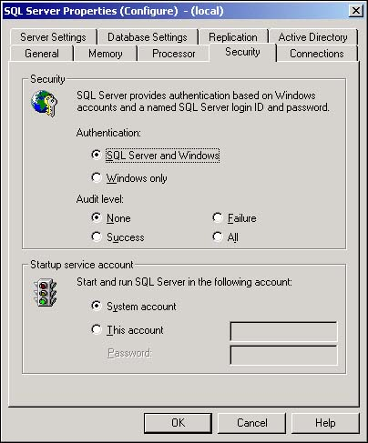

The alternative to Windows NT/2000 authentication is mixed-mode authentication. In this arrangement, a user is first authenticated by Windows, and is again authenticated by SQL Server as he tries to access a database. Mixed-mode is the only authentication for users who are working on Windows 98 computers or Macintoshes, Unix, and other non-Windows machines.
My network includes a number of non-Windows computers, such as Apple Macintoshes. In addition, several users are working from Windows 98 computers. I discovered that these users are unable to access the SQL Server databases that I created. It appears that mixed-mode authentication might be the only way for these users to access SQL Server.
Again, Enterprise Manager provides the dialog boxes that are necessary to set mixed-mode authentication. After mixed-mode is set, users must first log in to Windows (or, at least, access the SQL Server machine from a Windows network) and then provide a username and password to SQL Server before using a database.
In mixed-mode authentication, the user first logs into Microsoft Windows and then into SQL Server. At each step, the user's credentials are authenticated.
Mixed-mode authentication means that SQL Server keeps a record of users who are allowed to log in to SQL Server. It matches their password with the password that is stored with their user record.
SQL Server stores the user's login information in a system table named syslogins in the master database. This table includes an encrypted security ID (SID) and the user's encrypted password. The other information that is stored in the syslogins table is discussed in the next two sections.
Use Start, Programs, Microsoft SQL Server, Enterprise Manager to open Enterprise Manager.
Open the SQL Server group and right-click on the server you want to configure.
Select Properties from the context menu that appears. (The Properties command should be highlighted in the context menu.)
Select the Security tab.
Select SQL Server and Windows (for Windows 2000 and NT, SQL Server and Windows NT is displayed) from the authentication options near the top of the Security tab (see Figure 11.9).

Click the OK button to complete the process and close the Properties dialog box.
Although it might sound bothersome to provide two passwords before accessing SQL Server, most often the SQL Server password is provided by the front-end application with which the user is working. Users rarely, if ever, actually open Enterprise Manager or Query Analyzer and directly access the data in SQL Server databases. Instead, they'll use front-end applications that are written in Visual Basic, Access, or another database tool. Most often, the user opens the application and the application passes the user's identity and password to SQL Server as the database connection is made.
Although mixed-mode authentication might be more of a hassle to your users, it results in considerably better security for your database. Just because a user is able to access your network by using mixed-mode authentication does not mean that he is able to access SQL Server. The paradox is that some users might write down their network or SQL Server password in a location where unauthorized people can see it. However, the same could be said of any security system, and such security breaches must always be avoided.